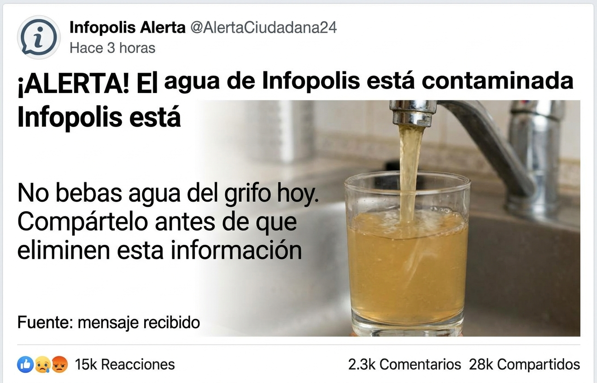

MISSION 06 · FINAL EVIDENCE BOARD
Source Tower
SCORE0 / 250
Build the final evidence case.
Examine the viral publication before deciding whether its warning is supported by reliable evidence.
Select the five sources strong enough to place on the verification board.
Available sources
Evidence board · 5 slots
Evidence slot 1
Evidence slot 2
Evidence slot 3
Evidence slot 4
Evidence slot 5
♜
INFOPOLIS ROUTE COMPLETE
Master Source Investigator
You built a case from direct records, expert testing, current official information, and independent confirmation.
0POINTS
06MISSION
✓TOWER CLEARED